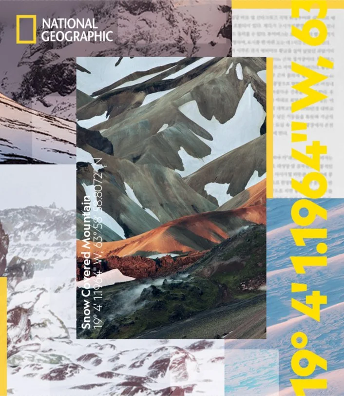
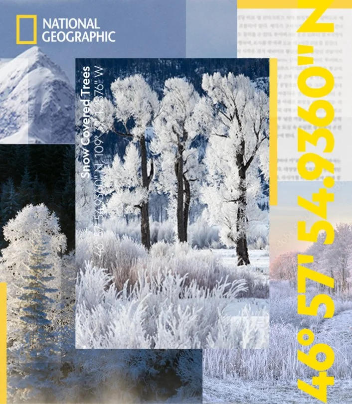
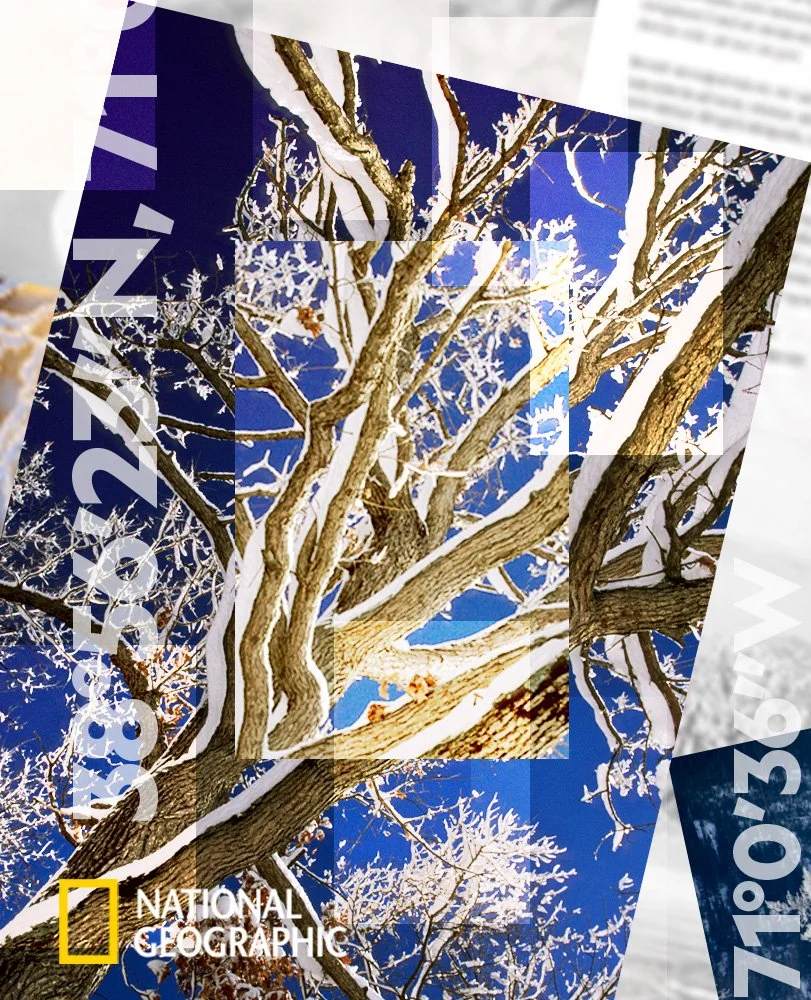
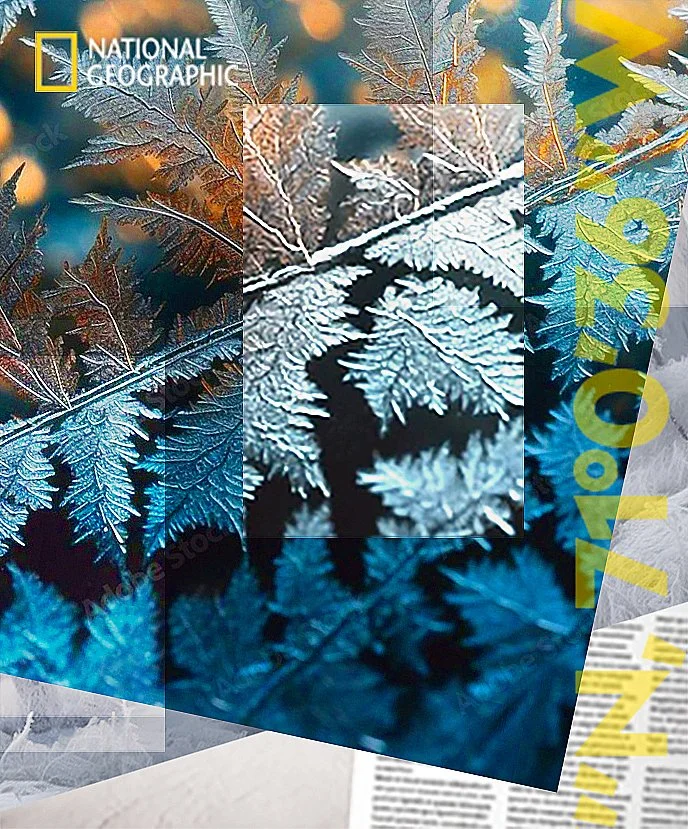
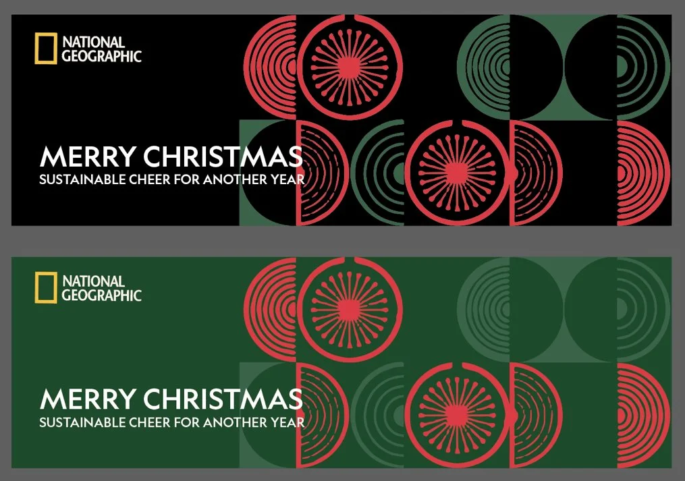
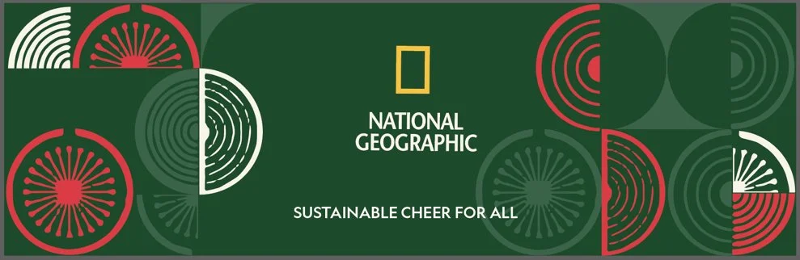
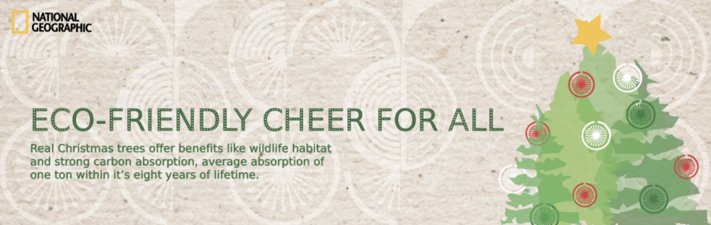
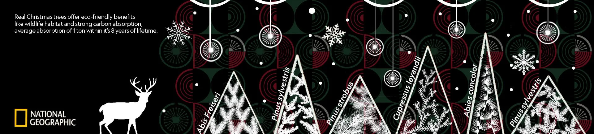
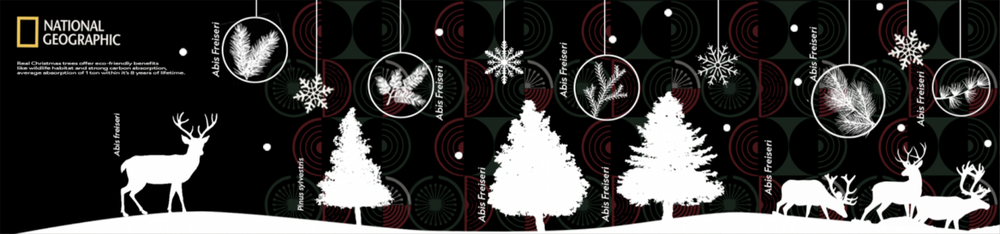

National Geographic Retail Toolkit
A system built to hold its shape in markets nobody on the team would visit.팀의 누구도 가보지 못할 시장에서도 모양을 유지하는 시스템.

- Client
- The Walt Disney Company
- Location
- APAC region
- Year
- 2022–2023
- Role
- Creative Manager, APAC
- Scope
- Toolkit creation, seasonal key visuals, graphics production, licensee management
The brief. A National Geographic retail toolkit for the APAC region, built to hold its shape in markets nobody on the team would visit.
The idea. Toolkits are where brand governance actually happens: writing the rules, then holding the line on them.
What I did. Created the toolkit, produced the graphics and managed licensees: winter visuals layered with coordinates, and a holiday line under ‘Sustainable cheer’.
과제. APAC 지역을 위한 내셔널지오그래픽 리테일 툴킷. 팀의 누구도 가보지 못할 시장에서도 모양을 유지해야 했습니다.
아이디어. 툴킷은 브랜드 거버넌스가 실제로 작동하는 곳입니다. 규칙을 쓰고, 그 선을 지키는 일.
역할. 툴킷 제작, 그래픽 제작, 라이선시 관리. 좌표를 겹친 겨울 비주얼, 그리고 ‘Sustainable cheer’ 홀리데이 라인.
Winter겨울
Coordinates좌표
Collaged landscapes, each tagged with its coordinates in the brand yellow.콜라주한 풍경마다 브랜드 옐로로 새긴 좌표.



Holiday홀리데이
Sustainable cheerSustainable cheer
A Christmas line built from circular ornament patterns in red and green.레드와 그린의 원형 오너먼트 패턴으로 만든 크리스마스 라인.



Formats포맷
Long runs길게 이어지는 그래픽
Panoramic panels of deer, trees and ornaments.사슴, 나무, 오너먼트로 이어지는 파노라마 패널.

